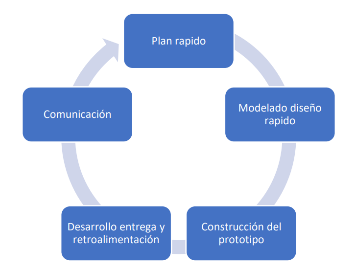
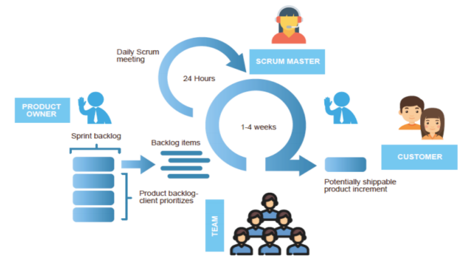

El desarrollo de software es una disciplina fundamental en la era digital actual, que impulsa la creación y evolución de aplicaciones y sistemas informáticos que utilizamos en nuestra vida diaria. En este contexto, la elección del modelo de desarrollo de software adecuado es crucial para garantizar el éxito del proyecto y la satisfacción del cliente.
Exploraremos los diferentes modelos de desarrollo de software, así como el uso de metodologías ágiles en este proceso. Los modelos de desarrollo de software son enfoques estructurados que guían el proceso de creación de software desde la concepción hasta la entrega final, mientras que las metodologías ágiles son un conjunto de prácticas colaborativas que priorizan la adaptabilidad, la flexibilidad y la entrega incremental.
Analizaremos en detalle algunos de los modelos de desarrollo de software más conocidos, como el modelo en cascada, el modelo incremental, modelo de evolución por prototipos, modelos ágiles, modelo basado por en componentes y el modelo de proceso unificado, destacando sus características principales, ventajas y desventajas
Mediante esta exploración, esperamos proporcionar una visión completa y enriquecedora de las actividades del desarrollo de software, desde los enfoques tradicionales hasta las prácticas más innovadoras, con el objetivo de comprender mejor cómo se lleva a cabo este proceso fundamental en el mundo tecnológico actual.
Modelo en cascada
El modelo en cascada es uno de los enfoques más antiguos y tradicionales para el desarrollo de software. Se caracteriza por una secuencia lineal y secuencial de etapas, donde cada fase debe completarse antes de pasar a la siguiente. Las etapas típicas del modelo en cascada son:
Requisitos (Análisis): En esta etapa, se recopilan y documentan todos los requisitos del sistema a partir de las necesidades del cliente y de los usuarios finales.
Diseño: Una vez que se comprenden los requisitos, se procede a diseñar la arquitectura del sistema y la estructura de la solución de software.
Implementación (Programación): Aquí es donde se lleva a cabo la programación real del software, basada en los diseños y especificaciones previamente establecidos.
Pruebas: Una vez que se ha completado la implementación, se realizan pruebas exhaustivas para verificar que el software funcione según lo previsto y cumpla con los requisitos establecidos.
Despliegue (Operaciones): En esta fase, el software se entrega al cliente o se implementa en el entorno de producción.
Mantenimiento: Después de la implementación, se proporciona soporte continuo y se realizan actualizaciones y correcciones de errores según sea necesario.
Una de las principales características del modelo en cascada es su naturaleza inflexible y poco adaptable. Dado que cada fase debe completarse antes de pasar a la siguiente, los cambios en los requisitos o en las especificaciones pueden ser difíciles y costosos de incorporar una vez que el proceso ha avanzado.
A pesar de sus limitaciones en términos de adaptabilidad, el modelo en cascada sigue siendo utilizado en ciertos contextos donde los requisitos son estables y bien entendidos desde el principio, como en proyectos de software con regulaciones estrictas o en entornos donde la documentación exhaustiva es fundamental. Sin embargo, su rigidez ha llevado al desarrollo de enfoques más ágiles y flexibles, como las metodologías ágiles, que priorizan la adaptabilidad y la entrega incremental.
Modelo Incremental
El modelo incremental es un enfoque de desarrollo de software que combina la filosofía de la entrega temprana y continua de funcionalidades con la estructura organizada y planificada de un proceso secuencial. A diferencia del modelo en cascada, que sigue una secuencia lineal de etapas, el modelo incremental divide el desarrollo del software en una serie de incrementos o iteraciones. En cada iteración, se desarrolla y entrega una parte del sistema funcional.
Las principales características del modelo incremental incluyen:
Iterativo y Evolutivo: El desarrollo se realiza en etapas sucesivas, donde cada iteración agrega nuevas funciones o capacidades al sistema. Esto permite una evolución gradual del software a lo largo del tiempo.
Entrega temprana de valor: Debido a su naturaleza iterativa, el modelo incremental permite la entrega temprana de partes funcionales del sistema. Esto brinda la oportunidad de obtener retroalimentación rápida por parte del cliente o usuario final y realizar ajustes según sea necesario.
Flexibilidad para cambios: Al dividir el desarrollo en incrementos, el modelo incremental facilita la incorporación de cambios en los requisitos o especificaciones del sistema. Los ajustes pueden realizarse en futuras iteraciones sin afectar el progreso del proyecto.
Mayor control y visibilidad: Cada iteración produce un entregable funcional que puede ser evaluado y probado por el cliente o el equipo de desarrollo. Esto proporciona una mayor transparencia y control sobre el progreso del proyecto.
Riesgos gestionados: Al abordar el desarrollo en incrementos más pequeños y manejables, el modelo incremental ayuda a mitigar los riesgos asociados con el desarrollo de software al permitir la identificación temprana de problemas y la realización de ajustes antes de que se vuelvan críticos.
En resumen, el modelo incremental es una alternativa flexible y adaptable al enfoque tradicional en cascada. Su capacidad para entregar valor de manera incremental, adaptarse a cambios en los requisitos y gestionar riesgos lo convierte en una opción atractiva para proyectos donde la incertidumbre y la complejidad son altas. Sin embargo, requiere una planificación cuidadosa y una comunicación efectiva para garantizar el éxito de cada iteración y la cohesión del sistema en su conjunto.
Modelo de Evolución por Prototipos
El modelo de evolución por prototipos es un enfoque iterativo de desarrollo de software que se centra en la creación rápida de prototipos o versiones simplificadas del sistema para obtener retroalimentación temprana del cliente o usuario final. A diferencia de los modelos tradicionales que requieren una especificación completa de requisitos antes de iniciar el desarrollo, el modelo de evolución por prototipos permite explorar y refinar los requisitos a medida que se desarrollan los prototipos.
Las principales características del modelo de evolución por prototipos incluyen:
Creación rápida de prototipos: El proceso comienza con la creación de un prototipo inicial que representa una versión simplificada del sistema. Este prototipo se desarrolla rápidamente para proporcionar una visión general de las características y funcionalidades principales.
Retroalimentación continua: Una vez que se completa el prototipo inicial, se presenta al cliente o usuario final para su evaluación y retroalimentación. Esta retroalimentación se utiliza para refinar y mejorar el prototipo en iteraciones sucesivas.
Refinamiento progresivo: A medida que se reciben comentarios y sugerencias del cliente, el prototipo se va refinando y mejorando en cada iteración. Este proceso de evolución continua ayuda a garantizar que el sistema final satisfaga las necesidades y expectativas del cliente.
Exploración de requisitos: El modelo de evolución por prototipos permite a los clientes y usuarios finales explorar y definir sus requisitos a medida que interactúan con los prototipos. Esto ayuda a identificar y resolver discrepancias o malentendidos en los requisitos de manera temprana.
Flexibilidad y adaptabilidad: Debido a su naturaleza iterativa y orientada al cliente, el modelo de evolución por prototipos es altamente flexible y adaptable a cambios en los requisitos o en las condiciones del entorno.

Fuente: Fundación Universitaria Compensar (2021). Autor
En resumen, el modelo de evolución por prototipos es una estrategia efectiva para el desarrollo de software en situaciones donde los requisitos no están bien definidos o son susceptibles de cambio. Al proporcionar una forma rápida y tangible de obtener retroalimentación del cliente, este enfoque ayuda a reducir el riesgo de desarrollar un sistema que no cumpla con las expectativas del usuario final.
Modelos Ágiles
Los modelos ágiles son un conjunto de metodologías y enfoques de desarrollo de software que priorizan la flexibilidad, la adaptabilidad y la colaboración entre los miembros del equipo. Estos modelos se centran en la entrega incremental de software funcional y en la capacidad de respuesta a los cambios en los requisitos del cliente.
Algunos de los modelos ágiles más conocidos incluyen:
Scrum: Scrum es un marco de trabajo ágil que se basa en iteraciones cortas llamadas "sprints". Durante cada sprint, el equipo desarrolla y entrega un conjunto de funcionalidades prioritarias. Scrum se caracteriza por sus roles definidos (Scrum Master, Product Owner, Equipo de Desarrollo), eventos (Sprint Planning, Daily Scrum, Sprint Review, Sprint Retrospective) y artefactos (Product Backlog, Sprint Backlog, Incremento).
Kanban: Kanban es un enfoque de gestión visual que se centra en la optimización del flujo de trabajo y la limitación del trabajo en curso. Utiliza un tablero Kanban para visualizar las tareas y su estado a lo largo del proceso de desarrollo. Kanban promueve la mejora continua y la entrega constante al cliente.
Extreme Programming (XP): XP es una metodología ágil que se enfoca en la calidad del software y en la colaboración cercana entre los miembros del equipo. XP incorpora prácticas como la programación en parejas, la integración continua, las pruebas automatizadas y la refactorización del código para garantizar la entrega de software de alta calidad de manera rápida y constante.
Lean Software Development: Inspirado en los principios del Lean Manufacturing, el Lean Software Development se centra en la eliminación de desperdicios, la entrega rápida y la mejora continua. Se basa en siete principios clave, incluyendo la entrega temprana, el empoderamiento del equipo y la optimización del todo.
Dynamic Systems Development Method (DSDM): DSDM es un marco de trabajo ágil que se centra en la entrega de soluciones que cumplan con los requisitos del negocio en un plazo y presupuesto definidos. Se basa en principios como la participación activa del usuario, la entrega frecuente y la colaboración entre equipos multidisciplinarios.

Fuente: Fundación Universitaria Compensar (2021). Autor
Estos modelos ágiles comparten valores y principios comunes, como la prioridad de los individuos y las interacciones sobre los procesos y las herramientas, la entrega de software funcional de manera frecuente, la colaboración con el cliente y la capacidad de respuesta a los cambios. Al adoptar estos enfoques ágiles, los equipos de desarrollo pueden mejorar la productividad, la calidad y la satisfacción del cliente.
Modelo Basado en Componentes
El modelo basado en componentes es un enfoque de desarrollo de software que se centra en la reutilización de componentes de software existentes para construir sistemas más grandes y complejos. En este modelo, los sistemas se construyen ensamblando componentes de software preexistentes en lugar de desarrollar cada funcionalidad desde cero.
Las principales características del modelo basado en componentes incluyen:
Reutilización de componentes: En lugar de desarrollar cada parte del sistema desde cero, se reutilizan componentes de software existentes que han sido desarrollados y probados previamente. Esto reduce el tiempo y los costos de desarrollo, así como el riesgo de errores.
Abstracción y encapsulamiento: Los componentes de software se diseñan para ser independientes y encapsulados, lo que significa que ocultan su implementación interna y solo exponen una interfaz clara y definida. Esto facilita su reutilización y facilita la integración en diferentes sistemas.
Flexibilidad y escalabilidad: El modelo basado en componentes permite una mayor flexibilidad y escalabilidad en el desarrollo de software. Los sistemas se pueden construir y modificar fácilmente agregando, eliminando o reemplazando componentes según sea necesario.
Enfoque en la arquitectura: Este modelo fomenta un enfoque en la arquitectura del sistema, donde se identifican y diseñan componentes reutilizables que pueden ser utilizados en múltiples proyectos y contextos.
Gestión de versiones y dependencias: Es importante tener una gestión efectiva de versiones y dependencias de los componentes para garantizar la coherencia y la integridad del sistema. Se deben establecer procesos y herramientas para gestionar la evolución de los componentes y sus interdependencias.
En resumen, el modelo basado en componentes ofrece una forma eficiente y efectiva de construir sistemas de software mediante la reutilización de componentes existentes. Al aprovechar la reutilización y la modularidad, este enfoque puede ayudar a reducir los costos y el tiempo de desarrollo, mejorar la calidad del software y facilitar la evolución y mantenimiento del sistema a lo largo del tiempo.
Modelo de Procesos Unificados
El modelo de procesos unificados es un enfoque de desarrollo de software que busca combinar las mejores prácticas de diferentes metodologías y procesos de desarrollo. Este enfoque proporciona un marco de trabajo completo y adaptable que puede ser personalizado para satisfacer las necesidades específicas de un proyecto o equipo.
Las principales características del modelo de procesos unificados incluyen:
Adaptabilidad: El modelo de procesos unificados se puede adaptar para adaptarse a las características y requisitos únicos de cada proyecto. Esto permite una mayor flexibilidad y personalización en el desarrollo de software.
Integración: Este enfoque busca integrar diferentes disciplinas y actividades de desarrollo, como la gestión de proyectos, el análisis de requisitos, el diseño, la implementación y las pruebas, en un proceso coherente y coordinado.
Enfoque en la arquitectura: El modelo de procesos unificados pone un fuerte énfasis en la arquitectura del sistema, promoviendo la identificación temprana de los requisitos arquitectónicos y la definición de una estructura sólida para el sistema.
Iterativo e incremental: Al igual que otros modelos ágiles, el modelo de procesos unificados fomenta un enfoque iterativo e incremental para el desarrollo de software. Esto permite la entrega temprana y frecuente de versiones funcionales del sistema.
Énfasis en la calidad: Se hace hincapié en la calidad del software en todas las etapas del desarrollo, desde la captura de requisitos hasta la implementación y las pruebas. Se utilizan técnicas de gestión de la calidad y aseguramiento de la calidad para garantizar que el producto final cumpla con los estándares requeridos.
En resumen, el modelo de procesos unificados proporciona un enfoque completo y flexible para el desarrollo de software, que busca combinar las mejores prácticas de diferentes metodologías y procesos en un marco de trabajo coherente y coordinado. Al permitir la adaptabilidad, la integración y un enfoque iterativo e incremental, este modelo puede ayudar a los equipos de desarrollo a gestionar de manera efectiva la complejidad y los desafíos asociados con la construcción de sistemas de software.
Análisis
El propósito fundamental de este blog es proporcionar una comprensión profunda y completa de los diferentes modelos de construcción de software y el uso de metodologías ágiles en el desarrollo de software. Para lograr este objetivo, es esencial comprender la importancia de estos aspectos en el contexto actual de la industria tecnológica.
En primer lugar, entender los diferentes modelos de construcción de software permite a los profesionales de TI y a los equipos de desarrollo elegir el enfoque más adecuado para un proyecto específico. Cada modelo tiene sus propias características, ventajas y desventajas, y seleccionar el modelo correcto puede tener un impacto significativo en el éxito del proyecto. Por ejemplo, el modelo en cascada es adecuado para proyectos con requisitos bien definidos y estables, mientras que el modelo ágil es más apropiado para proyectos que requieren flexibilidad y adaptabilidad a medida que evolucionan los requisitos del cliente.
Además, conocer las metodologías ágiles y su aplicación en el desarrollo de software es fundamental en un entorno donde la velocidad de entrega y la capacidad de respuesta a los cambios son críticas. Las metodologías ágiles promueven la colaboración entre los miembros del equipo, la entrega incremental de software funcional y la retroalimentación continua del cliente. Estas prácticas ayudan a reducir los riesgos asociados con el desarrollo de software, al tiempo que mejoran la calidad del producto final y la satisfacción del cliente.
En resumen, comprender los diferentes modelos de construcción de software y el uso de metodologías ágiles es esencial para el éxito en el desarrollo de software en el mundo actual. Estos aspectos no solo proporcionan a los profesionales de TI y a los equipos de desarrollo las herramientas necesarias para enfrentar los desafíos del desarrollo de software, sino que también les permiten aprovechar al máximo las oportunidades y adaptarse eficazmente a un entorno tecnológico en constante cambio.
Conclusión
A lo largo del blog hemos explorado la diversidad de modelos de construcción de software y el uso de metodologías ágiles en el desarrollo de software. Desde el modelo en cascada hasta las prácticas ágiles como Scrum y Kanban, hemos examinado cómo cada enfoque ofrece una perspectiva única sobre el proceso de desarrollo de software y cómo su aplicación puede influir en el resultado final de un proyecto.
Es evidente que la elección del modelo de construcción de software adecuado y la adopción de metodologías ágiles son cruciales para el éxito en el desarrollo de software en la actualidad. Estos aspectos no solo afectan la eficiencia y la efectividad del proceso de desarrollo, sino que también tienen un impacto directo en la satisfacción del cliente y la capacidad de adaptación a un entorno empresarial cada vez más dinámico.
Al comprender las fortalezas y limitaciones de cada modelo y metodología, los profesionales de TI y los equipos de desarrollo pueden tomar decisiones informadas que maximicen las posibilidades de éxito de un proyecto. La flexibilidad, la adaptabilidad y la colaboración son pilares fundamentales en este viaje, y su integración adecuada puede marcar la diferencia entre el éxito y el fracaso.
En última instancia, el desarrollo de software es un campo en constante evolución, impulsado por la innovación y la búsqueda constante de mejores prácticas. Al continuar explorando y adoptando nuevos enfoques y metodologías, podemos seguir avanzando hacia el desarrollo de software más eficiente, resiliente y centrado en el cliente en el futuro.
En conclusión, el conocimiento y la comprensión de los diferentes modelos de construcción de software y el uso de metodologías ágiles son esenciales para navegar con éxito el complejo paisaje del desarrollo de software en el siglo XXI.